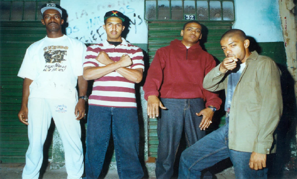
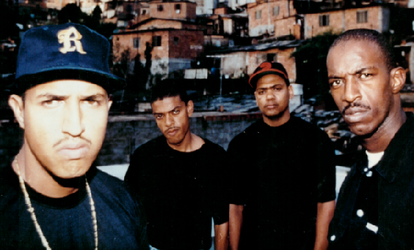
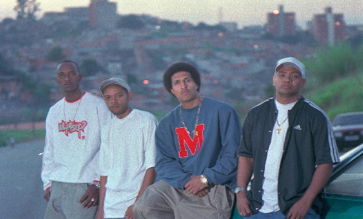
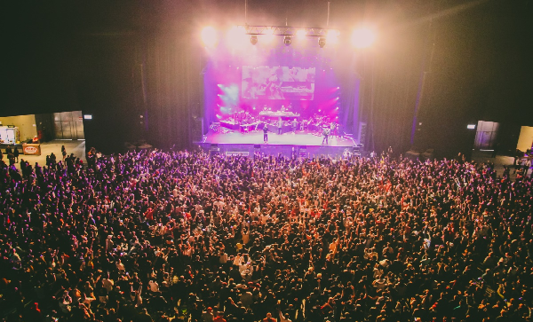
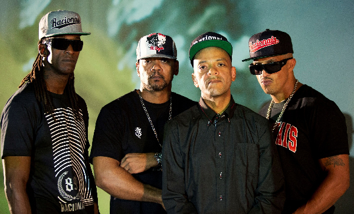
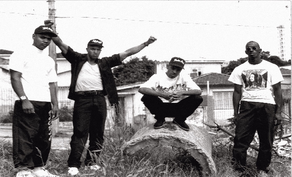
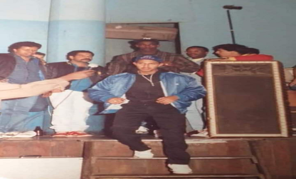
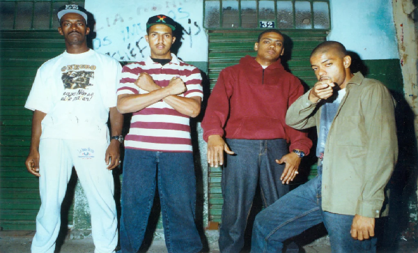
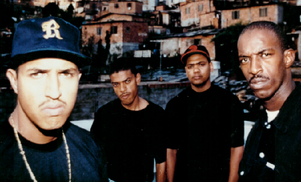
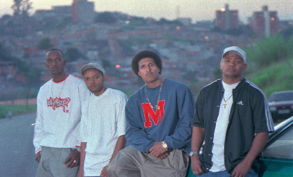
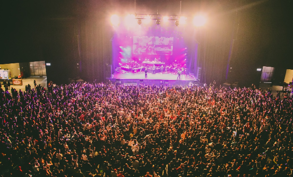
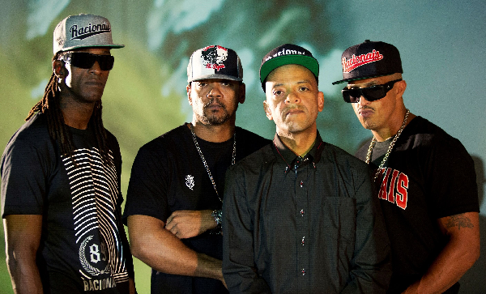
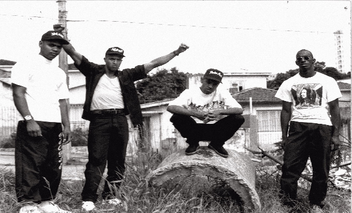
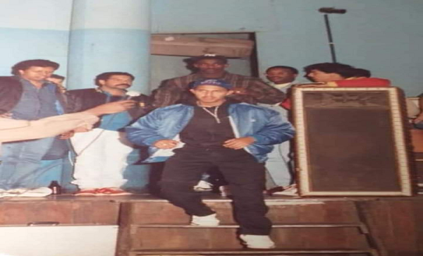
Tudo começou no ano de 1988, quando Mano Brown e Ice Blue eram apenas uma dupla e eram conhecidos como B.B Boys. Por outro lado, KL Jay e Edi Rock que também eram uma outra dupla, até que eles foram unidos pelo Milton Sales e formaram o maior e mais importante grupo do Rap Nacional, chamado Racionais MC's. As letras do grupo tem como objetivo mostrar a desigualdade social brasileira, abordando diversos temas como crime, injustiças, violência policial, preconceito racial, miséria e entre outros.
Com o rápido sucesso, no ano de 1992 o grupo foi levado até as escolas públicas de São Paulo, por iniciativa da Secretaria da Educação, para falar sobre racismo, violência policial e criminalidade no projeto "RAPensando a Educação". No final deste mesmo ano em São Paulo o grupo abriu o show do Public Enemy, um dos mais notáveis grupos de rap do mundo.
Em 1994 o grupo vivenciou em um show aquilo que era abordado nas músicas como um retrato da periferia, a violência policial. Durante uma apresentação no festival "Rap no Vale" em São Paulo, o grupo foi preso sob acusação de "incitação a violência" a partir de suas músicas. O show foi interrompido pela Polícia Militar, que acabou entrando em conflito com o público presente, gerando uma grande confusão.
Racionais MC's tem 9 álbuns lançados e mais de 1 milhão de discos vendidos (Aproximadamente 1 milhão e 300 mil). Vestibulares Como o Enem e vestibulares de universidades importantes do país vem colocando questões sobre as músicas e questões do álbum "Sobrevivendo no Inferno", eleito o 14° melhor disco brasileiro pela revista "Rolling Stone", em 2015 a prefeitura de São Paulo presenteou o papa Franciso com o disco.
A inspiração para o nome do grupo veio do disco "Racional", de Tim Maia cantor e compositor carioca (1942 - 1998), na faixa O Homem na Estrada, lançada em 1993, no terceiro disco do grupo, Raio X Brasil.
EM 2018 Racionais MC's comemorou os 30 anos do grupo com uma maratona de shows pelo Brasil e encerrou com 3 shows em São Paulo. Os rappers Emicida, Negra Li e Thaíde comentaram sobre a importância do grupo para RAP, periferia e cultura social. "O Racionais fez um monte de gente conhecer Jorge Ben, Tim Maia. Musicalmente falando, Racionais sempre me trouxe uma sensação profunda de continuidade", afirma Emicida. "É a exata continuação da cena de baile black de São Paulo, que é a geração dos nossos país."
A Vida é Desafio - Nada Como um Dia Após o Outro dia
Jesus Chorou - Nada Como um Dia Após o Outro dia
Vida Loka Parte I - Nada Como um Dia Após o Outro dia
Vida Loka Parte II - Nada Como um Dia Após o Outro dia
O Homem na Estrada - Raio X Brasil
Fórmula Mágica da Paz - Sobrevivendo no Inferno
Capítulo 4 Versículo 3 - Sobrevivendo no Inferno
Fim de Semana no Parque - Raio X Brasil